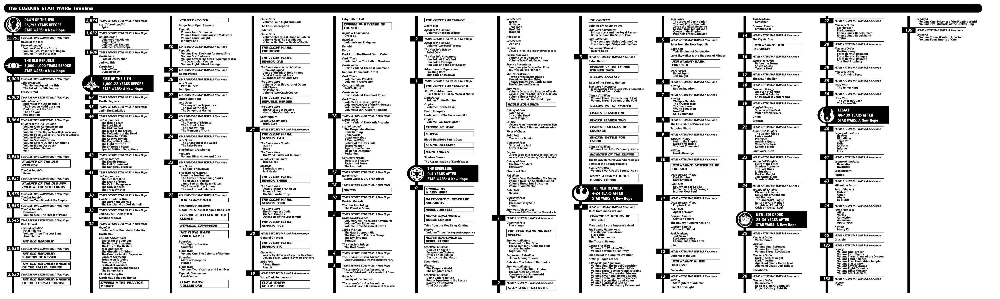

Although The Splinter of the Mind's Eye was originally written as a sequel to A New Hope, the unprecedented success achieved at the box office caused a change of plan. George Lucas wrote The Empire Strikes Back replacing Splinter as the sequel to Star Wars. Thus Splinter is not considered a novelisation but its own story. A story which became an instant bestseller off of the back of the sucess of A New Hope. It became the first entry in the Star Wars Expanded Universe.
The Expanded Universe now is seperated into two parts. Star Wars Legends and Star Wars Canon. Originally there was just one timeline but upon the purchase of Star Wars by Disney in 2012, most Star Wars media excluding the movies were deemed to be no longer canonical. Thus creating the Legends timeline. This was done to allow Disney more freedom when designing their own Star Wars stories.
The Legends timeline is now complete and will contain apart from the video game Star Wars: The Old Republic receiving expansions. The timeline contains over 200 novels, over 250 comic book arcs and over 50 video games. The timeline was created to understand the order each piece of media took place. The origin the timeline is around the events of the first Star Wars movie, A New Hope more specifically the Battle of Yavin. Splinter was retroactively placed 2 years after the Battle of Yavin, 2 ABY.
★★★★★ 3.26 Stars
Splinter of the Mind's Eye was released in 1978 and as you can see from the reviews, it is not considered a masterpiece or classic of the genre, so ways is it still read today?
The answer is the same reason it became a best seller originally, the peoples desire for more Star Wars. The movies are just the beginning of what the Star Wars franchise has to offer and Splinter is the beginning of the Expanded Universe and is many peoples first step. Although not essential reading for the Expanded Universe, it can be a easy gateway into a dense world.
It also an amusing read on its own for Star Wars fans, not due to the story but due to the vast differences seen. Foster was provided with little information past the screenplay for A New Hope when writing the book. Its evident he was not privy to some of the twists, planned by George Lucas. He also took liberties of his own regarding the force and lightsabers. Both have well defined rules now but at the time, had endless possibilities.
Below you can see a video Star Wars fan's first reading of Splinter of the Mind's Eye and some of the aforementioned differences.